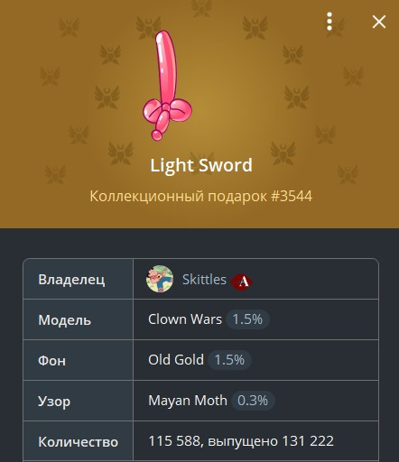
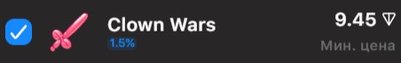
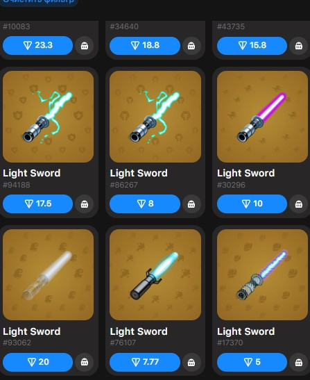

Как правильно поставить цену подарка и не прогадать?
Так вот, мы узнали как покупать подарки, узнали редкости подарков,
немного узнали о характеристиках подарков, а за какую цену их продавать то? Узнаю я цену подарка так, для начала смотрю похожие подарки на маркете (Tonnel),
допустим примерная цена подарка на маркете 30$, далее смотрю на редкость фона сопоставив её с предлогаемой ценой фона этого же подарка на маркете,
цену узора таким образом я не вижу смысла смотреть т.к. на узор почти и не смотрят при покупке, смотрю цены и анализирую чисто логически т.к.
все подарки это неповторимый NFT, не может быть такого что раз модели похожие, то и цена такая же.
Нам же нужно набить цену чтобы потом радоваться заработанным деньгам.
Посмотрев и проанализировав все эти критерии я выставляю свой подарок на продажу либо в самом тг за звезды, либо через маркеты
(как продавать подарки на маркетах посмотрите в ютубе).

Например у нас есть вот этот подарок.

Минимальная цена этого подарка 9.45 ton, то есть ниже данной цены мы не смотрим.

Цена подарков такого же типа, но с фоном как у меня. Цены варьируются от 5 ton до 200 ton
Учитывая что редкость модели моего подарка 1,5% и сравнив модели такой же редкости с таким же узором как и у меня
я решил добавить к своей начальной цене 3.7 ton. Итого получилось - 13,15 ton, за такую цену я бы выставил подарок.